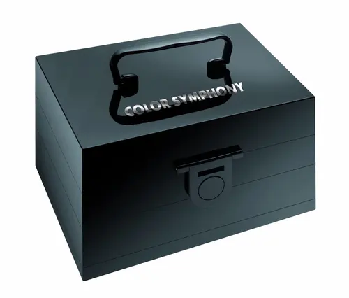
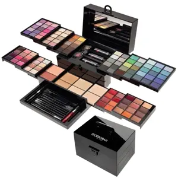

Qualche mese fa vi mostrai una delle mie trousse, perché per ciò che contiene non può di certo essere chiamata palette, che è molto più indicato per gli ombretti il nome 'palette'.
Vi feci vedere una foto di una delle bellissime trousse della Deborah ovvero la SYMPHONY. .
Già il nome è poesia, sinfonia . .
Due trousse professionali dedicate alle donne più esigenti in fatto di makeup.
Disponibili in 2 size differenti (Large ed anche Extra Large) per accontentare chi cerca la vera professionalità in termini di look. All'interno troviamo una palette ricca di toni dai più eleganti e intensi a quelli più luminosi e romantici.
Contengono una vasta scelta di ombretti, polveri viso, illuminanti, gloss, mascara,matita occhi e applicatori viso, labbra e occhi.
Insomma è completa!

Cioè voglio dire ragazze, bellissima . .

Beh che dire, ottimo prodotto senza ombra di dubbio!
Esistono due tipi di questa bella linea per donne più sofisticati e sono:
COLOR SYMPHONY :
■ LARGE
■ EXTRALARGE
Quella che è in mio possesso è la prima in foto fatta a Beauty case
È proprio un vero e proprio Beauty da mettere in valigia e state sicure che vi mancherà poco e niente per essere perfettamente truccate anche fuori porta.
Un gioiellino ad essere sincera che al momento vi posso solo rappresentare per l'aspetto ma non della durata e tutti gli swatch perchè per mancanza di tempo materiale non ho, ahimè, potuto provare questa meraviglia. . ma so per certo, poichè non è la prima volta che uso Deborah Milano, che posso andare a colpo sicuro . . sappiamo infatti, che la qualità a buon mercato tende ad essere tante volte un esperienza negativa o addirittura provocare reazioni allergiche!
Questo Beauty, invece, è uno dei tanti di questo marchio, ad essere un grande esempio di qualità e di diversità!
Sembrano molto cremosi i gloss ed hanno una grande varietà di colori, dai più caldi ai più leggeri per cercare di abbinare toni perfetti, o fare un chiaro-scuro a seconda delle preferenze.
Oppure se i lip gloss non sono la vostra passione, allora hanno tre diversi rossetti che potrete facilmente utilizzare al posto dei gloss. .